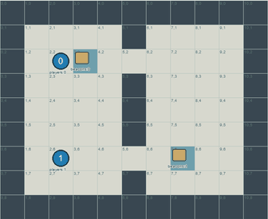
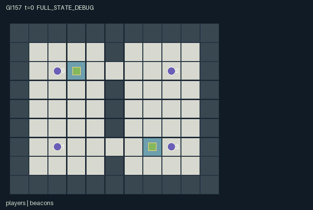

GI157 / SPATIAL
幽光标记战
两队共享队内遥测，有限信标电量提供雷达，敌方诱饵可干扰远处目标识别。
Original saved demonstration
Recorded native state, often authored scripts or interventions; information scope and failures are preserved in the original provenance. This is a saved demonstration, not live browser play.

Release verification episode
Untrained uniform legal actions. Actual JAX state sampled along the full original episode; full-state debug camera. No human performance or learning claim.

Run this game
crucibles play --game 157
Start Python locally, then open the address printed by the terminal. Installation, multiplayer, takeover and keyboard controls →
Objective, rewards & ending
Exact task contract
{
"objective": "Coordinate beacon control, cover, pursuit, decoy placement and rescues to capture both opposing players simultaneously.",
"natural_termination": "The game terminates when either team has both players captured after the simultaneous capture/rescue phase. If both teams are fully captured on that step, winner remains -1 for a draw. A horizon of 128 otherwise truncates without assigning a winner.",
"interaction": "Teammates share information, cover and rescues. Beacons give radar and consumable protection; enemy decoys suppress detection and wards and can consume a pursuer move by stunning it at a real cell. Conflicting capture intentions resolve simultaneously.",
"observation_access": "Own-team telemetry, beacon state and capture/rescue identity notices are public to the relevant observation channels. Opponents require direct range or friendly beacon radar and may be hidden by enemy jammers. Adjacent opponents are always visible. Decoys are explicitly labeled when seen; no false indistinguishability claim is made."
}Declared per-step reward bounds: -2 to 2. Observability: partially_observable.
Rules
- Teams are 0/1 versus 2/3. Teammates share telemetry; ordinary opponent sight has radius two.
- A beacon with at least two charge grants owner-team radar within four cells of the beacon.
- A nearby enemy decoy jams ordinary/radar detection, but adjacent opponents always remain visible.
- The real decoy also jams enemy wards within two cells; it has six ticks of life and can be steered.
- Trying to enter an enemy decoy consumes it, costs extra stamina and stuns the pursuer without movement.
- Tagging chooses one adjacent opponent. An adjacent covering teammate or unjammed charged friendly beacon can prevent capture.
- Tag decisions are simultaneous. A newly captured rescuer cannot rescue, while a valid rescue frees an already captured teammate.
- Captured or stunned players retain action zero and stay physically on the map. Captured teammates can return through rescue.
- Both opponents captured ends naturally; simultaneous full capture is a draw, and horizon truncation does not invent a winner.
Original mechanism document (historical status wording retained)
# Ghostlight Tag **AUTHOR_ONLY_NOT_EXECUTED.** Initial parentless train proposal 157, window 0, source attempt 0. No candidate import, JAX evaluation, reset/step call, numerical R0, trajectory replay, rendered animation or learning run occurred during authoring. AST/syntax and declarative data-schema checks do not establish runtime correctness or game outcomes. Native boundary: A=4, O=171, U=14, H=128. Observations are float32 `[A,O]`, actions int32 `[A]`, masks bool `[A,U]`, rewards float32 `[A]`, and every state leaf is fixed-shape int32 or bool. Source SHA-256: `a48d44379f9cdc85b5ee2bcda19d1c06a5e98b0e6ea29cd601f5b11d918674bd`. ## Game and cross-agent mechanisms Coordinate beacon control, cover, pursuit, decoy placement and rescues to capture both opposing players simultaneously. Beacon control changes both information and capture opportunities. Channeling a neutral beacon claims it with one charge; friendly channeling adds charge up to four, while enemy channeling drains it and makes it neutral when that channeling reduces charge to zero. At charge two or more it supplies team radar within radius four. A charged friendly beacon within radius two can also spend one charge to block a tag. Ward consumption can leave a zero-charge owned beacon; ownership is not silently erased by the ward phase. Each team has one finite-lived movable decoy. Deploying places it one cell along the actor's facing, and steering changes its actual position. It jams opponent ordinary/radar sensing of targets within radius two and jams enemy wards in that area. Direct adjacency always reveals a real opponent, preventing hidden-contact ambiguity in tag resolution. Decoys are honest, labeled jammers when seen: the game does not claim their fixed observation slots are indistinguishable from real players. Their causal deception role is concealment and route baiting, not a renderer trick. An attempted entry into an enemy decoy consumes the decoy, leaves the actor at its old cell, spends another stamina and imposes one forced-rest tick. Moving one's own decoy can open or close a pursuit route, hide a partner from a remote beacon, or prevent a ward from protecting an opponent. Own-team decoy coordinates are shared; enemy decoys require range-two sight. Beacon owner and charge are publicly visible, while hidden player/decoy positions remain masked in each role view. Movement and rotating contention resolve before tags. Each tag action selects at most one adjacent eligible opponent, with rotating target priority. Cover protects an adjacent teammate rather than oneself. Ward charges are allocated to threatened victims in rotating order. Remaining tag decisions are simultaneous, so a captured attacker can still complete a valid simultaneous tag, and same-tick cover can still help. Rescuing is stricter: the target must have been captured before this tick and a newly captured rescuer cannot free it. A team may invest in a safe radar/ward zone, coordinate cover while crossing a choke, jam a defended approach, or rescue its captured partner instead of pressing an attack. These are proposed strategic options, not demonstrated learning. Captured bodies remain on their real cells as obstacles and receive only the no-op mask until rescue; dones are joint because capture is reversible. Capture reward is +1 to both teammates per new opposing capture and -1 per own capture. Simultaneous events sum with bounds -2..2. Reset is deterministic and ignores its key. Future variants could change beacon placement, jamming range, cover geometry or decay; none is evaluated here. ## Actions, contention and temporal order - `0`: Rest and recover two stamina; only action while captured or stunned. - `1`: Move north and face north. - `2`: Move east and face east. - `3`: Move south and face south. - `4`: Move west and face west. - `5`: Attempt to tag one adjacent opponent; spend two stamina. - `6`: Channel nearest adjacent beacon to charge own claim or drain enemy claim. - `7`: Deploy own team decoy one cell along facing; spend two on success. - `8`: Steer own team decoy north; spend one on success. - `9`: Steer own team decoy east; spend one on success. - `10`: Steer own team decoy south; spend one on success. - `11`: Steer own team decoy west; spend one on success. - `12`: Rescue adjacent previously captured teammate; spend two stamina. - `13`: Cover an adjacent teammate from tags this tick; spend one stamina. Out-of-range or masked actions deterministically become action 0. A legal attempt can be unfulfilled when its resolution-phase spatial, resource or joint-action prerequisites are absent. Ordinary movement rejects another agent's start-of-tick cell, so swaps are blocked. Empty-cell contention uses the smallest `(agent_id - t) mod A`. Rigid towing/hauling has its own explicit whole-body translation phase; its participating body can use its own vacated cells, and free agents remain blocked by the old and new body. All priorities and rule-specific ordering are literal in the source evidence below. ## Native observations and truthful rendering Own-team telemetry, beacon state and capture/rescue identity notices are public to the relevant observation channels. Opponents require direct range or friendly beacon radar and may be hidden by enemy jammers. Adjacent opponents are always visible. Decoys are explicitly labeled when seen; no false indistinguishability claim is made. - Columns `0:8` (self): Own id,team,x,y,stamina,stun,captured,clock. - Columns `8:14` (public): Capture scores[2],currently captured counts[2],winner (-1 ongoing/draw),joint done. - Columns `14:46` (local): Four player records: x,y,team,stamina,stun,captured,facing,visible. Teammates share telemetry; opponents use range/radar/jamming rules. Hidden fields -1. - Columns `46:54` (public): Two beacon records: x,y,owner,charge. - Columns `54:64` (local): Two decoy records: x,y,team,ttl,visible. Own decoy is known globally; enemy decoy requires radius 2. - Columns `64:72` (public): Capture notices[4],rescue notices[4]; notices reveal identities, not hidden positions. - Columns `72:171` (public): Static 9 by 11 public terrain map, yx row-major. Positions are actual integer `[x,y]` coordinates with downward y; maps are indexed `[y,x]`. `scene.json` binds exact state paths for map, entities, visibility, attributes and events. Public event information is included in the flat observations. A per-step event is not relabeled as a cumulative counter or persistent level. Hidden entity fields are masked, and a full-state debug view must be labeled separately from role-visible replay. Scene descriptors contain no fabricated trajectory or executable rendering content. A real animation still requires an actual trusted replay. ## Termination, numerical bounds and intended invariants The game terminates when either team has both players captured after the simultaneous capture/rescue phase. If both teams are fully captured on that step, winner remains -1 for a draw. A horizon of 128 otherwise truncates without assigning a winner. Nonterminal calls advance the int32 clock exactly once. Natural completion or failure has priority over the horizon. An already terminal raw call preserves every state leaf, observation and clock, returns zero rewards and all dones true, and retains the original terminated/truncated causes. No raw auto-reset occurs. Observation bounds are -1..256 and reward bounds -2..2. These are data/game bounds, not scientific effectiveness gates. Source-specific conservation, geometry and resource properties above are declared invariants for independent execution checks, not numerically verified claims. The manifest lists every leaf and safe structural invariants. Signed integer categories and coordinates are explicitly int32; the external uint32 reset key is not duplicated as hidden mutable state. ## Literal source evidence - Information masks depend on real beacons and decoys: `candidate.py:12` — `def refresh(self, s):` - Arena, teams and charge states: `candidate.py:26` — `def reset(self, key):` - Inactive and stunned no-op semantics: `candidate.py:41` — `def legal_actions(self, s):` - Real movable team decoys: `candidate.py:65` — `# Each team owns one real movable jammer; competing commands have rotating priority.` - Interception-path trap: `candidate.py:81` — `# An attempted enemy-decoy entry consumes the decoy and stuns without advancing.` - Public beacon charging: `candidate.py:94` — `# A charged beacon supplies team radar and consumable capture wards; opponents can drain it.` - One-target attacks and ally cover: `candidate.py:106` — `attacks = (a == 5)[:,None] & (s["team"][:,None] != s["team"][None,:]) & (distance == 1) & ~state["captured"][None,:]` - Jammable consumable wards: `candidate.py:116` — `jam = jnp.any((s["decoy_ttl"] > 0) & (s["decoy_team"] != s["team"][victim]) & (dd <= 2))` - Simultaneous capture and rescue priority: `candidate.py:122` — `# Capture decisions are simultaneous; a newly captured rescuer cannot free a teammate.` - Natural win/draw rule: `candidate.py:134` — `down0 = jnp.all(s["captured"][:2])` - Role-visible native observations: `candidate.py:147` — `def observe(self, s):` ## Unexecuted playthroughs and interventions `playthrough.json` supplies finite literal joint-action scripts and paired branches differing in exactly one role action at one decision. Every script and pair is `UNEXECUTED_AUTHOR_HYPOTHESIS`. Vector dimensions, integer action ranges and single-action differences were checked as data. Runtime legality, actual state changes, solvability, strategy quality and terminal success remain unverified. A future executor must retain failures or inconclusive traces rather than converting an intention into a success receipt. ## Reference use, interface handoff and provenance Only the supplied official snapshots were consulted. JaxMARL supplies the agent-keyed parallel API convention and `__all__`; the restricted kernel keeps a homogeneous array boundary for later trusted integration. Pgx supplies explicit legality/terminal/key API ideas, not any board-game rules. Craftax supplies a reference for spatial inventories and persistent game state. PureJaxRL is an algorithm implementation reference, not a new environment library; the supplied Craftax recurrent PPO baseline itself credits PureJaxRL. None of their environment, model, training or wrapper code was copied, imported or run. Frozen sources: [JaxMARL README](https://github.com/bold-lab-ai/JaxMARL/blob/main/README.md), [Pgx README](https://github.com/sotetsuk/pgx/blob/main/README.md), [Craftax README](https://github.com/MichaelTMatthews/Craftax/blob/main/README.md), [PureJaxRL README](https://github.com/luchris429/purejaxrl/blob/main/README.md), [Craftax recurrent PPO baseline](https://github.com/MichaelTMatthews/Craftax_Baselines/blob/main/ppo_rnn.py). Their exact snapshot hashes are recorded in `author_input_freeze.json`. A later trusted adapter may expose the fixed ids `agent_0` through `agent_3` as JaxMARL dictionaries, with `__all__` taken from `done_all` and unchanged observation/mask semantics. This author packet adds no learner or public adapter and does not modify the frozen experimental algorithm. Inactive-role no-op semantics, where relevant, are defined by the kernel rather than by renderer behavior. `author_input_freeze.json` binds all twenty frozen inputs and the separately authorized administrative erratum. The erratum resolves a copied reservation description and expressly permits reading this batch authorization; it changes no design, rule or outcome. No earlier candidate files, GI/learned/CURRENT results, training/evaluation feedback or final-test material were read for this batch. Only the four assigned new output directories were written. Window accounting remains parentless ordinals 154..157, 158 used/reserved of the existing 512 cap, and unchanged later windows. This packet establishes authored assets only; runtime quality, replay, animation, learnability, transfer and scientific acceptance remain unestablished.
Commands
Roles & abilities
agent_0 Amber teammate 0
agent_1 Amber teammate 1
agent_2 Indigo teammate 2
agent_3 Indigo teammate 3
Observation permissions
Training receives only the original observation rows. Role cameras use declared visibility; debug cameras are explicitly marked. Local benchmark records log debug exposure and role takeover history.
Exact observation layout
[
{
"slice": [
0,
8
],
"visibility": "self",
"meaning": "Own id,team,x,y,stamina,stun,captured,clock."
},
{
"slice": [
8,
14
],
"visibility": "public",
"meaning": "Capture scores[2],currently captured counts[2],winner (-1 ongoing/draw),joint done."
},
{
"slice": [
14,
46
],
"visibility": "local",
"meaning": "Four player records: x,y,team,stamina,stun,captured,facing,visible. Teammates share telemetry; opponents use range/radar/jamming rules. Hidden fields -1."
},
{
"slice": [
46,
54
],
"visibility": "public",
"meaning": "Two beacon records: x,y,owner,charge."
},
{
"slice": [
54,
64
],
"visibility": "local",
"meaning": "Two decoy records: x,y,team,ttl,visible. Own decoy is known globally; enemy decoy requires radius 2."
},
{
"slice": [
64,
72
],
"visibility": "public",
"meaning": "Capture notices[4],rescue notices[4]; notices reveal identities, not hidden positions."
},
{
"slice": [
72,
171
],
"visibility": "public",
"meaning": "Static 9 by 11 public terrain map, yx row-major."
}
]Entity visibility & attributes
[
{
"id": "players",
"kind": "agent",
"count": 4,
"position": [
"agent_pos"
],
"active": [
"agent_active"
],
"visibility": [
"agent_visible"
],
"attributes": [
{
"state_path": [
"team"
],
"meaning": "0 amber, 1 indigo",
"display": "category"
},
{
"state_path": [
"stamina"
],
"meaning": "Current stamina, capacity six",
"display": "bar"
},
{
"state_path": [
"stun"
],
"meaning": "Remaining forced-rest ticks",
"display": "number"
},
{
"state_path": [
"captured"
],
"meaning": "Temporarily captured; can be rescued by teammate",
"display": "flag"
},
{
"state_path": [
"facing"
],
"meaning": "Last requested movement direction: 1 N,2 E,3 S,4 W",
"display": "category"
}
]
},
{
"id": "beacons",
"kind": "landmark",
"count": 2,
"position": [
"beacon_pos"
],
"active": [
"beacon_active"
],
"visibility": [
"beacon_visible"
],
"attributes": [
{
"state_path": [
"beacon_owner"
],
"meaning": "Claiming team; -1 means neutral",
"display": "category"
},
{
"state_path": [
"beacon_charge"
],
"meaning": "Radar/ward charge, zero to four",
"display": "bar"
}
]
},
{
"id": "decoys",
"kind": "object",
"count": 2,
"position": [
"decoy_pos"
],
"active": [
"decoy_active"
],
"visibility": [
"decoy_visible"
],
"attributes": [
{
"state_path": [
"decoy_team"
],
"meaning": "Owning team",
"display": "category"
},
{
"state_path": [
"decoy_ttl"
],
"meaning": "Remaining real jammer lifetime",
"display": "bar"
}
]
}
]Actual verification & provenance
Per-game execution receipt
{
"game": "gi157",
"status": "PASS",
"verification_revision": 2,
"source_sha256": "a48d44379f9cdc85b5ee2bcda19d1c06a5e98b0e6ea29cd601f5b11d918674bd",
"seed": 20261101,
"runtime": {
"jax": "0.4.38",
"numpy": "1.26.4",
"devices": [
"TFRT_CPU_0"
]
},
"dimensions": {
"num_agents": 4,
"observation_size": 171,
"num_actions": 14,
"max_steps": 128
},
"checks": {
"eager_reset": {
"status": "PASS",
"seconds": 1.7918720245361328
},
"observation_spaces_legal_masks": {
"status": "PASS",
"seconds": 1.2978887557983398
},
"eager_step": {
"status": "PASS",
"seconds": 2.4916656017303467
},
"jit_reset": {
"status": "PASS",
"seconds": 0.09368276596069336
},
"jit_step": {
"status": "PASS",
"seconds": 1.4568448066711426
},
"eager_jit_integer_parity_float_measurement": {
"status": "PASS",
"seconds": 0.0010006427764892578
},
"jit_vmap_reset": {
"status": "PASS",
"seconds": 0.13140606880187988
},
"jit_vmap_step": {
"status": "PASS",
"seconds": 1.8634421825408936
},
"outer_autoreset_api": {
"status": "PASS",
"seconds": 1.552976131439209
},
"full_original_horizon_episode_and_render": {
"status": "PASS",
"seconds": 0.7799842357635498
}
},
"human_scores": null,
"browser_controls": "PENDING",
"failures": [],
"elapsed_seconds": 11.90992522239685,
"float_parity_max_abs": 0.0,
"numerical_parity": "EXACT",
"raw_terminal_absorbing": "PASS",
"terminal_outer_reset": "PASS",
"episode_steps": 128,
"scripted_random_returns": [
0.0,
0.0,
0.0,
0.0
],
"terminal": true,
"demo_information": "FULL_STATE_DEBUG",
"demo_frames": 27,
"render_roles_checked": 4
}Chromium control verification
{
"game": "gi157",
"status": "PASS",
"human_scores": null,
"engineering": true,
"checks": [
"catalog_selected_and_real_native_reset",
"dom_queue_and_native_step",
"second_participant_ownership_and_native_joint_step",
"all_roles_individually_controllable_no_role_cap",
"explicit_debug_camera",
"release_to_pure_ai_without_reset"
],
"seconds": 4.751349449157715
}Original identity and file hashes
{
"id": 157,
"key": "gi157",
"title": "幽光标记战",
"summary": "两队共享队内遥测，有限信标电量提供雷达，敌方诱饵可干扰远处目标识别。",
"tags": [
"团队对抗",
"感知干扰"
],
"family": "spatial",
"dimensions": {
"num_agents": 4,
"observation_size": 171,
"num_actions": 14,
"max_steps": 128
},
"source_sha256": "a48d44379f9cdc85b5ee2bcda19d1c06a5e98b0e6ea29cd601f5b11d918674bd",
"manifest_sha256": "867af05edc71d88a55a5c9f1010c940ad9cdc8001d86911985f05ffab0e0facc",
"files": [
{
"file": "candidate.py",
"sha256": "a48d44379f9cdc85b5ee2bcda19d1c06a5e98b0e6ea29cd601f5b11d918674bd",
"bytes": 12114,
"origin": "work/exp_2/game_incubator_v3/community_games222_225_visualization_root222_v1/native154_candidate/registry/v2/games/game-v3-00157/candidate.py"
},
{
"file": "manifest.json",
"sha256": "867af05edc71d88a55a5c9f1010c940ad9cdc8001d86911985f05ffab0e0facc",
"bytes": 12608,
"origin": "work/exp_2/game_incubator_v3/community_games222_225_visualization_root222_v1/native154_candidate/registry/v2/games/game-v3-00157/manifest.json"
},
{
"file": "scene.json",
"sha256": "57c9f902571d897352634daa0364d9f74e5d7e5651b4b17a261ae1b12a4eb0bc",
"bytes": 7180,
"origin": "work/exp_2/game_incubator_v3/community_games222_225_visualization_root222_v1/native154_candidate/registry/v2/games/game-v3-00157/scene.json"
},
{
"file": "mechanism.md",
"sha256": "9cbfe2819b0c91b996013e0a910f56f8fe0bd2405e292e3a369eeac22f6e7735",
"bytes": 12105,
"origin": "work/exp_2/game_incubator_v3/sources/game-v3-00157/attempt_00/mechanism.md"
},
{
"file": "playthrough.json",
"sha256": "2a7c13297168a82119e59e064ead3cbbf930abd268226b9bab57b6e01a05286e",
"bytes": 5348,
"origin": "work/exp_2/game_incubator_v3/sources/game-v3-00157/attempt_00/playthrough.json"
}
],
"original_status": "NATIVE154_REFERENCE",
"original_saved_replay": true,
"release_validation": "PASS",
"human_scores": null,
"browser_validation": "PASS"
}